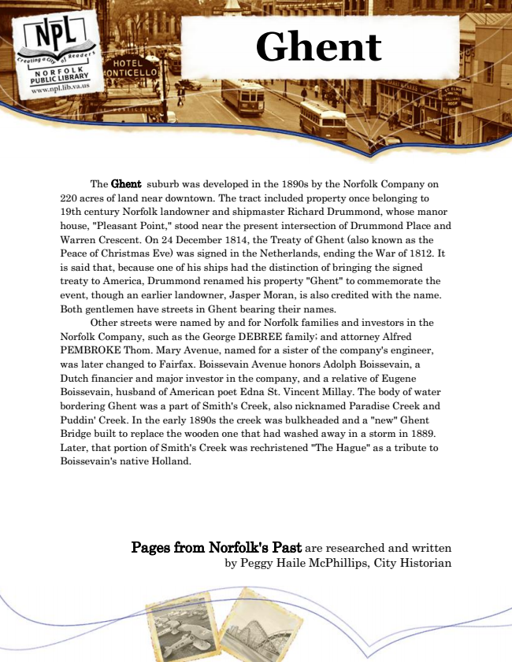

Ghent
The Ghent suburb was developed in the 1890s by the Norfolk Company on 220 acres of land near downtown. The tract included property once belonging to 19th century Norfolk landowner and shipmaster Richard Drummond, whose manor house, "Pleasant Point," stood near the present intersection of Drummond Place and Warren Crescent. On 24 December 1814, the Treaty of Ghent (also known as the Peace of Christmas Eve) was signed in the Netherlands, ending the War of 1812. It is said that, because one of his ships had the distinction of bringing the signed treaty to America, Drummond renamed his property "Ghent" to commemorate the event, though an earlier landowner, Jasper Moran, is also credited with the name. Both gentlemen have streets in Ghent bearing their names.
Other streets were named by and for Norfolk families and investors in the Norfolk Company, such as the George DEBREE family; and attorney Alfred PEMBROKE Thom. Mary Avenue, named for a sister of the company's engineer, was later changed to Fairfax. Boissevain Avenue honors Adolph Boissevain, a Dutch financier and major investor in the company, and a relative of Eugene Boissevain, husband of American poet Edna St. Vincent Millay. The body of water bordering Ghent was a part of Smith's Creek, also nicknamed Paradise Creek and Puddin' Creek. In the early 1890s the creek was bulkheaded and a "new" Ghent Bridge built to replace the wooden one that had washed away in a storm in 1889. Later, that portion of Smith's Creek was rechristened "The Hague" as a tribute to Boissevain's native Holland.
Pages from Norfolk's Past are researched and written by Peggy Haile McPhillips, City Historian